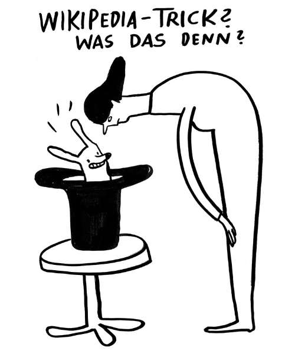

Tipp 2: Quelle überprüfen - der Wikipedia-Trick

Die wirkungsvollste, schnellste und einfachste Art der Quellenüberprüfung ist der so genannte Wikipedia-Trick. Er funktioniert in drei Schritten:
- öffne einen neuen Tab
- gib in die Suchleiste die URL der Website / den Organisationsname / den Namen der publizierenden Person ein
- ergänze dahinter Wikipedia
In diesem Screencast erklären wir den Trick und veranschaulichen ihn anhand eines Beispiels.
Wenn es über die von Dir gefundene Information etwas Relevantes zu erzählen gibt, dann wird dir das mit sehr großer Wahrscheinlichkeit mit diesem ‘Wikipedia-Trick’ als Wikipedia-Artikel angezeigt wird. Darin findest Du einen mit Links belegten kurzen Überblick über die Information. Wenn Dir nichts angezeigt wird, dann hilft das auch bei der Einordnung.
Merke Dir also: Nutze den Wikipedia-Trick, um die Quelle zu untersuchen!
Was aber, wenn nicht die Quelle für mich das entscheidende ist, sondern die Information an sich? Dann kommt Tipp 3 ins Spiel: Weitere Informationen finden!